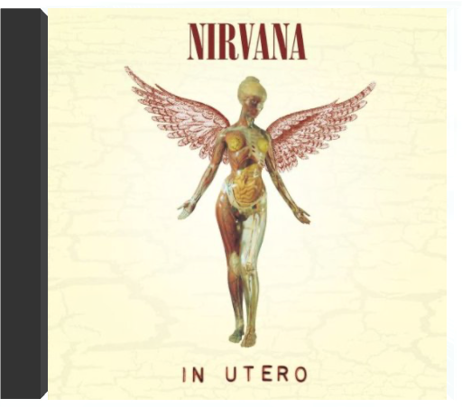

(Volume Two) First official vinyl reissue of groundbreaking 1966 albums from the 'Godfather of Ethiopian Jazz'. A blend of New York Latin & Ethiopian Afro-funk grooves.  A voir Kurt Cobain assis, parmi des fleurs blanches, une guitare folk sur les genoux, on pourrait croire que ses démons s'étaient calmés. En fait, c'est l'inverse : dans ce contexte paisible, alors que le chaos électrique a fait place à un accordéon et à un violoncelle, chacun de ses mots touche et bouleverse. Sa voix déchirée sur "All Apologies", ses lamentations sur la reprise du "Where Did You Sleep Last Night" de Leadbelly transpercent le coeur de l'auditeur, plus profondément que les hurlements de "Smells Like Teen Spirit". Cobain en avait assez de Nirvana, disait-on à l'époque, et il se rapprochait de Peter Buck et de Michael Stipe de REM. Ce disque live dépouillé à l'extrême nous donne une indication de ses dernières envies musicales et rend nos regrets plus amers encore. —Hubert Deshouse  in uteronirvana Avec In Utero, Kurt Cobain était attendu au tournant. Comment succéder à l'incontournable Nevermind sans décevoir, alors que "Smells Like Teen Spirit" est entre temps devenu l'hymne d'une génération, l'équivalent de ce que fut "My Generation" des Who aux années 70? Kurt Cobain n'a jamais rien eu d'un messie et à cette question oiseuse, il répond par un autre brûlot illuminé par les étincelants "Heart Shaped Box" et "Rape Me". Deux bombes incendiaires à faire passer Led Zeppelin pour des enfants de chœur. Déjà, la lassitude pointe, dès les paroles du premier morceau, mais l'ensemble se révèle cinglant comme un coup de trique, sec et dépouillé par le minimalisme hardcore du producteur Steve Albini. Le disque devait s'intituler "I Hate Myself And I Want To Die". Prémonitoire ricaneront les corbeaux. Certes. Mais, attention: chef d'œuvre. —Philippe Robert  Sortie après le triomphe de Nevermind, afin de donner au trio un peu de temps pour composer, cette compilation de bric et de broc alterne le meilleur et le moins bon. Si "Downer" ou "Aero Zeppelin" n'ont d'intérêt qu'historique, rappelant que Nirvana à ses débuts n'était qu'un gang punk sans originalité particulière, "Sliver", "Been A Son" ou "Aneurysm", au contraire, comptent parmi les compositions les plus accrocheuses de Kurt Cobain, et auraient pu dignement figurer sur Nevermind ou In Utero. On a également plaisir à entendre le groupe reprendre Devo ("Turnaround") ou ses chers Vaselines ("Molly's Lips", "Son Of A Gun"), qui seront encore honorés sur l'album Unplugged. Un document indispensable pour les fans. —Thierry Chatain  Cet album a changé la face du rock et sans doute tué Kurt Cobain. L'ange à l'oeil trop clair et aux cheveux filasses n'était certainement pas assez solide pour supporter la charge d'une gloire planétaire aussi méritée qu'inconcevable. On ne comprendra jamais pourquoi cette alchimie complexe força les portes de millions de foyers réfractaires aux musiques dures, mais la qualité de tous ses ingrédients n'aura échappé à personne. Au-delà de l'effet "Smells Like Teen Spirit", on soulignera la production nickelée de Butch Vig, la puissance de mélodies filigranées et l'apport considérable du batteur Dave Grohl au monde déchiqueté et pessimiste de Kurt. Entre mélancolie hypocondriaque et guitares d'assaut, le mouvement grunge trouva en Nevermind ses principales (voire uniques) lettres de noblesse. Le meilleur digest possible des années quatre-vingt-dix : indispensable. —Jean-Luc Manet |  Si No One Is Innocent fut initialement accueilli avec une méfiance bien légitime, il fallut néanmoins rapidement se rendre à l'évidence et admettre que le groupe ne se réduisait pas à une simple "réplique française" de Rage Against The Machine. De "La Peau" à "Ne reste-t-il que la guerre pour tuer le silence" en passant par "Genocide" et "Le Feu", No One Is Innocent aligne une impressionnante série de refrains mémorables enluminant des morceaux fichtrement efficaces. Alternant titres en français et en anglais (avec un accent à couper au couteau), No One Is Innocent fait preuve d'une étonnante maturité qu'il consolidera encore sur Utopia, son second album, fondamentalement différent du premier et pourtant tout aussi captivant. Pendant ce temps, en coulisses, Lofofora et Silmarils affûtaient leurs armes. La relève était assurée. —Hervé SK Guégano  Avec ce premier album, Norah Jones s'impose comme une chanteuse charismatique, digne héritière des aînées Carole King, Rickie Lee Jones, Joni Mitchell et Laura Nyro. Comme ces deux dernières, la jeune Américaine ne veut rien se refuser : entre le jazz (le disque est édité par le label Blue Note), la pop, voire le folk ou la country, elle ne choisit pas, préférant varier les ambiances sans que la cohérence de l'ensemble soit jamais entamée. Pour venir à bout de cette tâche délicate, pas moins de deux producteurs ont été nécessaires. Craig Street apporte son expérience acquise aux côtés d'artistes singuliers (Joe Henry, Cassandra Wilson, Me'Shell Ndegeocello) tandis que Arif Mardin, producteur des œuvres d'Aretha Franklin sur Atlantic, apporte en matière d'arrangements la touche nécessaire à la concrétisation des idées de la chanteuse. Bien qu'il ne s'agisse que de son premier opus, Norah Jones jouissait déjà d'une certaine réputation due à sa participation à l'un des disques du guitariste Charlie Hunter où, en reprenant Nick Drake et Roxy Music, elle révélait toute l'étendue de ses influences. Autour d'un groupe soudé, quelques invités, dont le batteur Brian Blade et le guitariste Bill Frisell, sont venus prêter main-forte. Ce qui domine sur Come Away With Me, c'est la maturité d'un sacré tempérament d'emblée affichée. Et, surtout, une totale authenticité. —Hervé Comte  Les frères Coen ont convoqué la fine fleur du bluegrass et du gospel pour réaliser la bande originale de leur film le plus drôle. On y entend des violons qui geignent, des voix qui chantent à la lune, et on y sent vivre un monde et vibrer une époque. Et quand ces violons, par exemple, sont entre les mains de John Hartford ("Indian War Whoop", "I Am A Man Of Constant Sorrow"), on traverse des moments de pure délectation. Hartford est un des maîtres du violon bluegrass et Alison Krauss s'impose comme sa nouvelle déesse. Elle interprète ici "Down To The River To Pray" avec une dévotion intense et un abandon total. Les anciens côtoient la relève pour signifier encore mieux l'inaltérable continuité de ces musiques sans âge. Ainsi en est- il de Ralph Stanley ("O Death") ou des Stanley Brothers ("Angel Hand") qui chantent ces classiques du gospel du fond de leur âme. Toutes ces chansons sentent la tourbe et la sueur, le travail pénible sous un soleil de plomb et les bouffées d'espoir. Cet album permet en prime de découvrir des réunions inespérées avec le duo Gillian Welch et Alison Krauss ("I'll Fly Away"), ces deux-là rejoignant à leur tour Emmylou Harris ("Didn't Leave Nobody But The Baby"). Un CD 100 % au bois et aux voix d'une traçabilité totale. —José Ruiz  Film au casting impressionnant (G.Clooney, B.Pitt, J.Roberts), Ocean's Eleven se devait d'avoir une bande originale à la hauteur de ses prétentions. Et c'est chose faite, en divisant le disque en deux parties bien distinctes. La première est constituée de chansons dont l'indémodable "Caravan" d'Arthur Lyman ou "Papa Loves Mambo" d'un Perry Como toujours d'actualité. Pour la seconde partie, Steven Soderberh a fait appel au DJ David Holmes, bidouilleur de génie réputé dans l'underground new-yorkais. Et le compositeur se jette dans une fusion des époques, mariant le son des années soixante avec la technique du troisième millénaire. Jouissive, sa musique mêle avec un goût subtil, un rien provocateur, l'électronique au rétro bien trempé. Cela donne une teinte décalée, inexplicable mais ô combien savoureuse. Il suffit de se replonger dans "Bow Down To The Exit Sign", et l'envie d'un bon cambriolage se fait sentir. Une B.O.F aussi atypique qu'envoûtante. —Didier Leprêtre  On pourrait les appeler les Nine Inch Nails du punk. Tout comme NIN, les Offspring ont su utiliser les ingrédients d'un plat qui a fait ses preuves. Prenez des guitares bien grinçantes, faites-les jouer trois accords pas plus, ajoutez des voix d'écorchés vifs et flambez au vitriol avant d'enrober le tout dans une pâte très mélodique. Les singles de Smash, l'album du succès, passent toujours autant à la radio ("Gotta Get Away", "Come Out And Play", "Self Esteem"). A travers les 14 titres de Smash, les Offspring nous livrent une vision très incisive, malicieuse et pertinente de l'adolescence. C'est sûrement leur meilleur album. Il a plus de consistance que leurs premiers enregistrements et il est moins mielleux que leurs derniers. Un mariage parfait entre riffs et rage. —Genevieve Williams |

Julien
Collection Total:
1 897 Items
1 897 Items
Last Updated:
Oct 30, 2021
Oct 30, 2021


 Made with Delicious Library
Made with Delicious Library